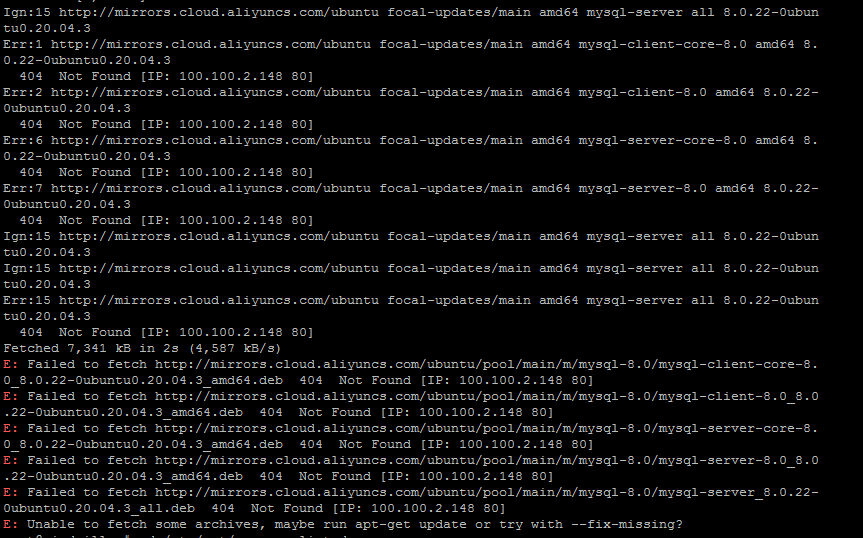

服务器安装Mysql
apt install mysql-server
可能出现找不要源，添加阿里源

添加阿里源
cd /etc/apt/
sudo cp sources.list sources.list.bak
sudo vim sources.list
#添加阿里源
deb http://mirrors.aliyun.com/ubuntu/ bionic main restricted universe multiverse
deb http://mirrors.aliyun.com/ubuntu/ bionic-security main restricted universe multiverse
deb http://mirrors.aliyun.com/ubuntu/ bionic-updates main restricted universe multiverse
deb http://mirrors.aliyun.com/ubuntu/ bionic-proposed main restricted universe multiverse
deb http://mirrors.aliyun.com/ubuntu/ bionic-backports main restricted universe multiverse
deb-src http://mirrors.aliyun.com/ubuntu/ bionic main restricted universe multiverse
deb-src http://mirrors.aliyun.com/ubuntu/ bionic-security main restricted universe multiverse
deb-src http://mirrors.aliyun.com/ubuntu/ bionic-updates main restricted universe multiverse
deb-src http://mirrors.aliyun.com/ubuntu/ bionic-proposed main restricted universe multiverse
deb-src http://mirrors.aliyun.com/ubuntu/ bionic-backports main restricted universe multiverse
最后执行如下命令更新源
sudo apt-get update
sudo apt-get upgrade
# 查看有没有安装MySQL：
dpkg -l | grep mysql
# 安装MySQL：
apt install mysql-server
引用博客：https://www.cnblogs.com/opsprobe/p/9126864.html & https://www.cnblogs.com/stronger-xsw/p/12779385.html